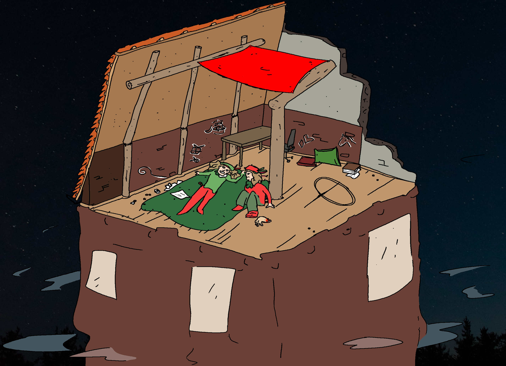
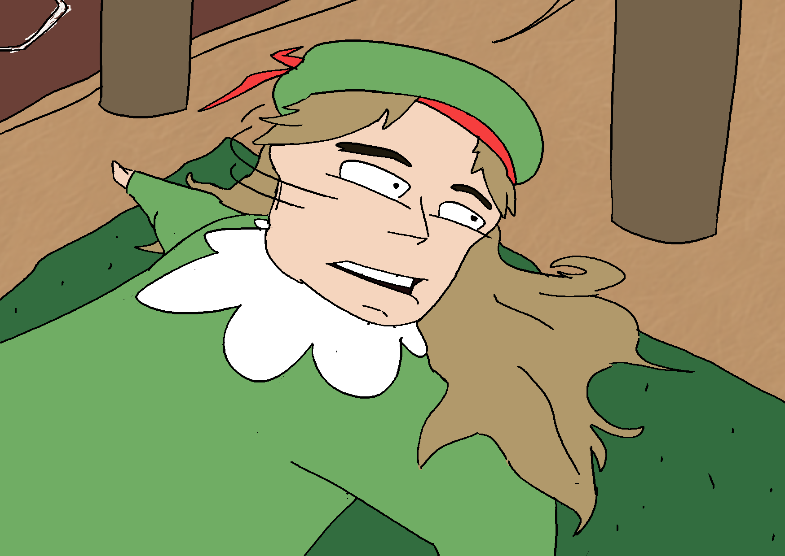
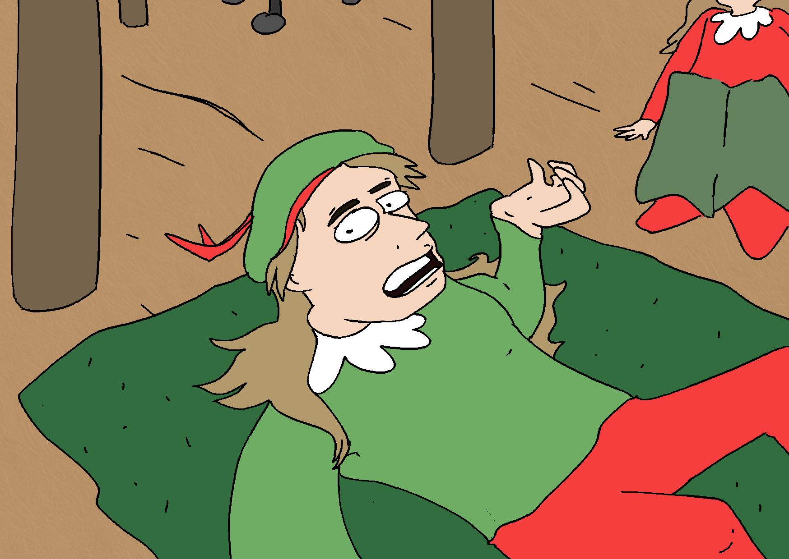
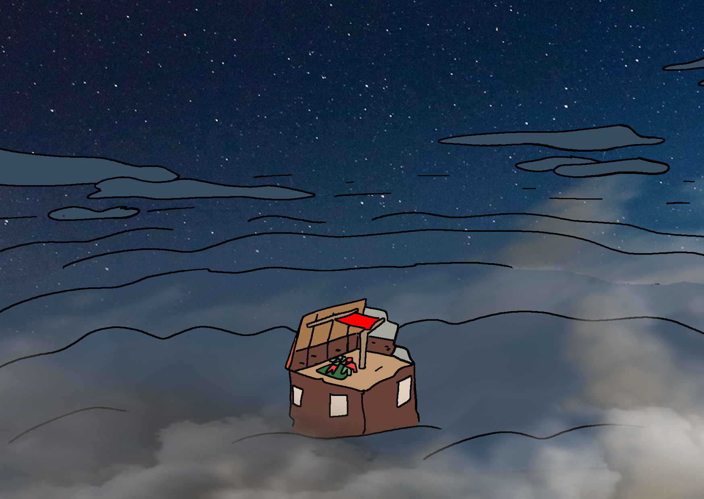
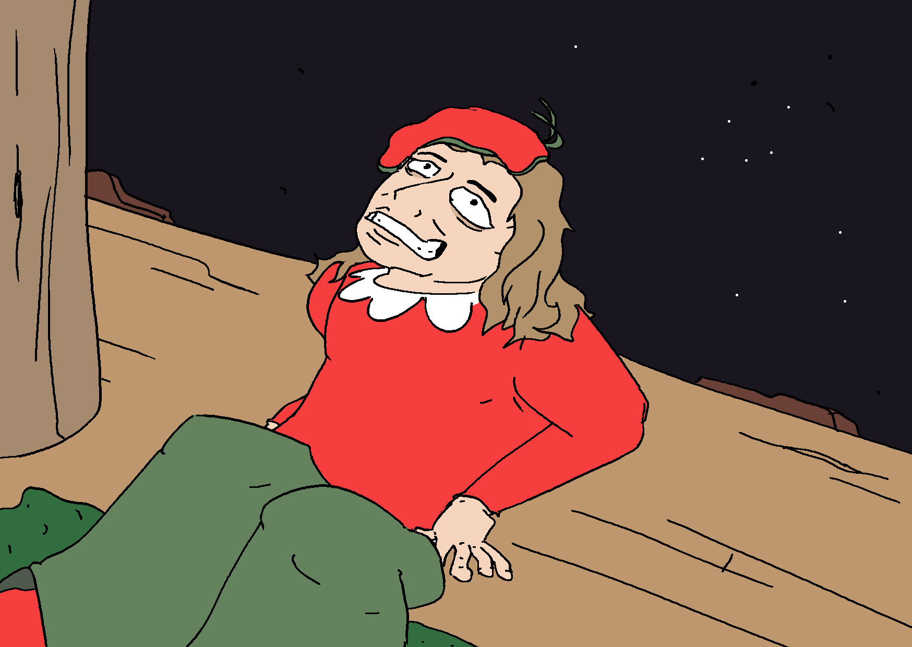
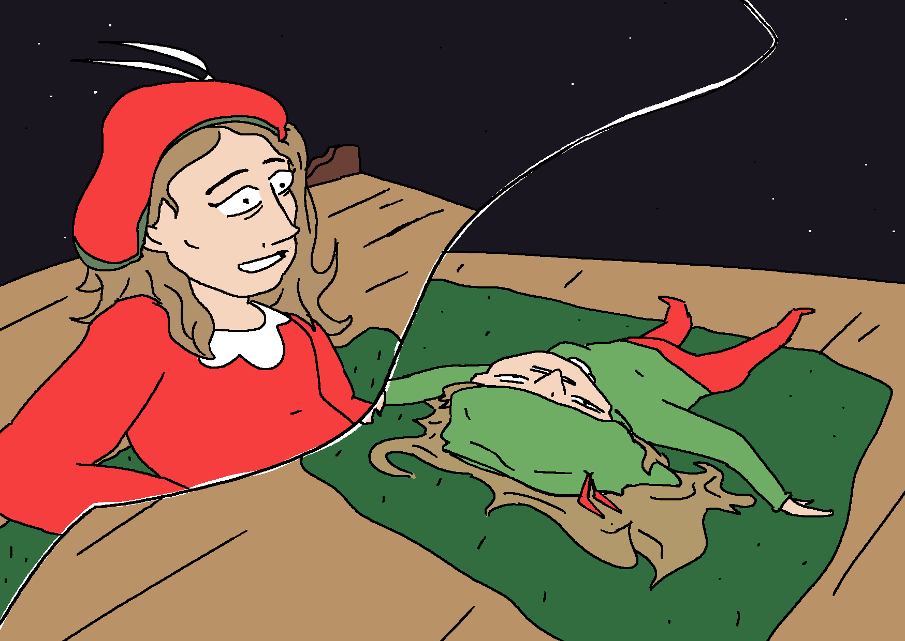
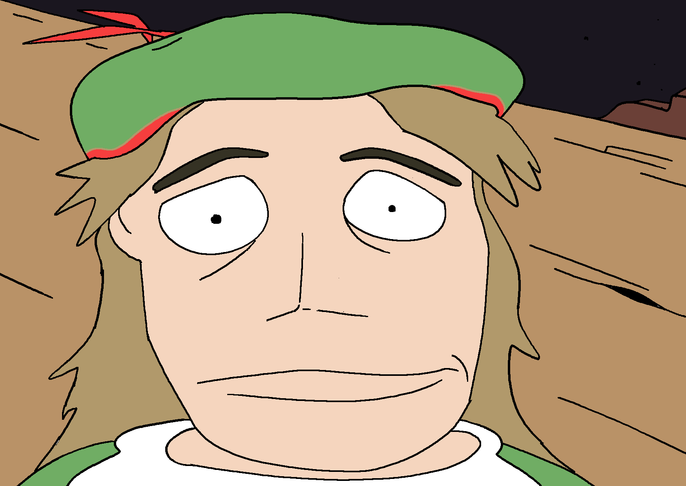
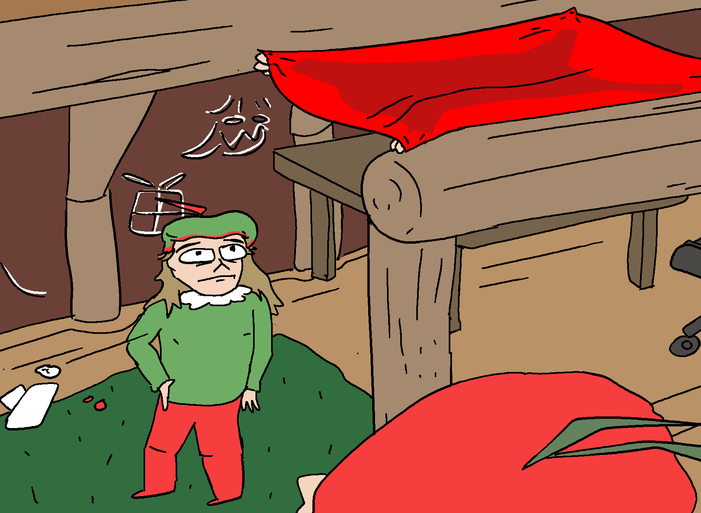
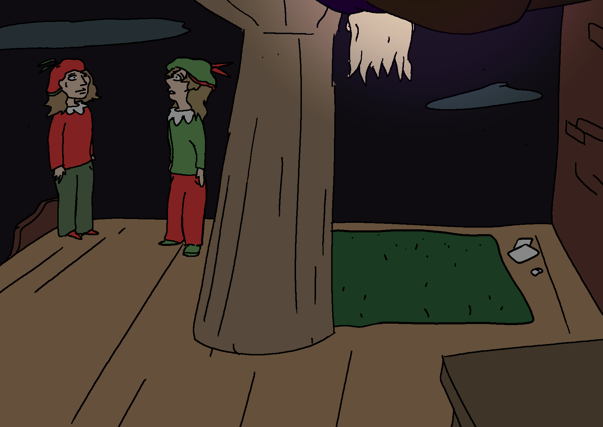
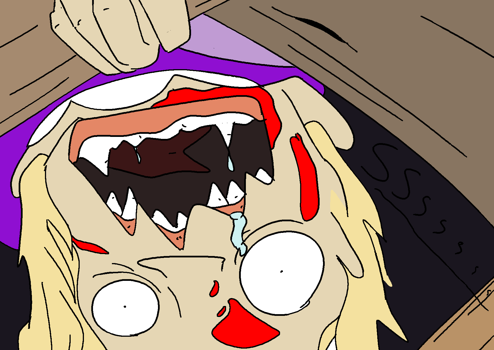

Het is de 97e dag PS (Post-Sint) en Iritepiet en Antiritepiet zitten in hun gebruikelijke hideout bovenaan een vervallen appartementencomplex. De locatie is versierd met kleden in de kleuren van hun kleding.
Hun kamer telt meerdere spullen van de vorige eigenaar, zoals een tafel en een bureaustoel; wat kussens en een stapel boeken. Daarnaast hebben Iritepiet en Antiritepiet in hun excursies voor voedsel een aantal spullen gevonden, zoals een hoepel, lege a4'tjes en een plastic nep-hand.
Wat zullen ze doen?

IRPI: Geloof jij nog in Sinterklaas?

IRPI: Ik ben aan het twijfelen?
IRPI: We hebben al zo lang niets meer van hem gezien.

IRPI: en de voorspelling laat ook maar op zich wachten.
IRPI: “een nieuwe sint zal opstaan wanneer de waardige bereid is om de rol te nemen”
IRPI: op dit punt kan ik nauwelijks meer geloven dat er een "waardige" is

IRPI: de anderen om ons heen houden het niet meer; ik kan ze zelfs soms moeilijk herkennen als wie ze vroeger waren.
IRPI: begrafenisondernemerpiet leek extra luguber toen we hem laatst tegenkwamen vond je niet?

IRPI: Zelfs Huppeltjespiet was altijd zo vrolijk en grappig.
IRPI: Nu lijkt ze meer zakelijk en sluw.
IRPI: De druk is teveel.
IRPI: Hoe lang totdat het ons ook teveel wordt?



AIPI: we hebben elkaar toch?

AIPI: totdat het zover is maken we het gewoon zo leuk mogelijk.
AIPI: wat hebben we anders te doen?
AIPI: gewoon hier op de vloer liggen tot een of andere freak genoeg honger krijgt om je langzaam op te eten?
AIPI: Mwa, ik ben het al soort van aan het doen hè...

AIPI: wacht maar, of ik eet jou nog op als je zo doorgaat!
AIPI: dan begin ik met je been… en dan een hap uit je arm…!!
IRPI: Wat bed- AUW NEE! Je hebt gelijk, je hebt gelijk!!

IRPI: Ik vind het gewoon...


IRPI: Ik vind het gewoon moeilijk...

AIPI: het is ook moeilijk

KBPI: